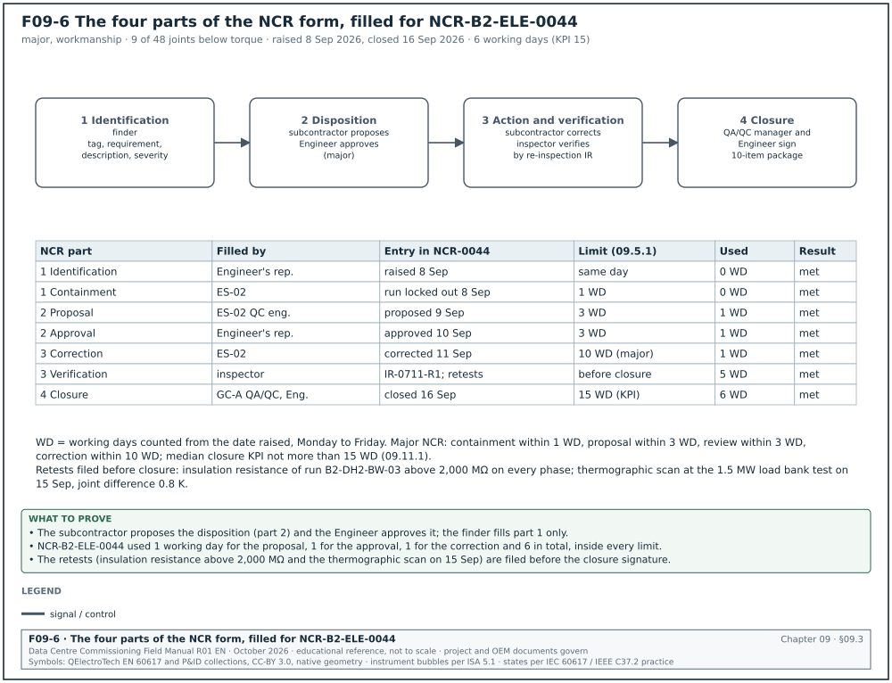
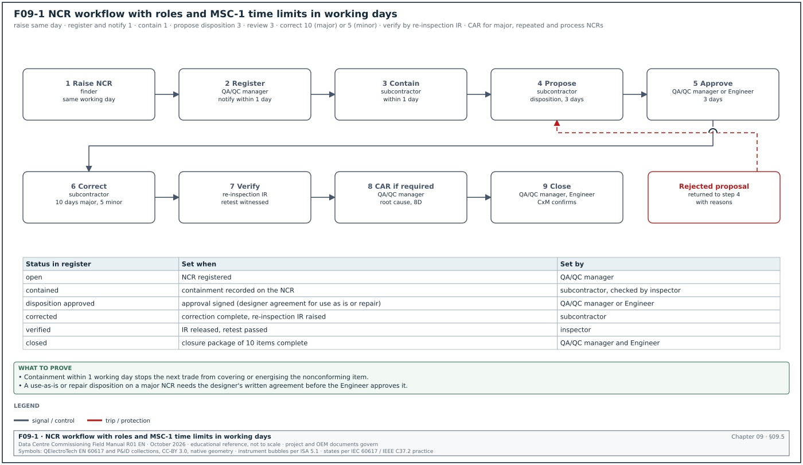
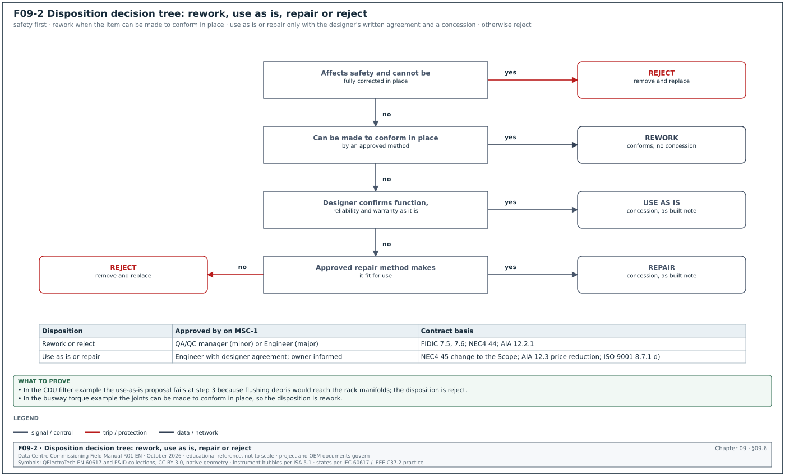
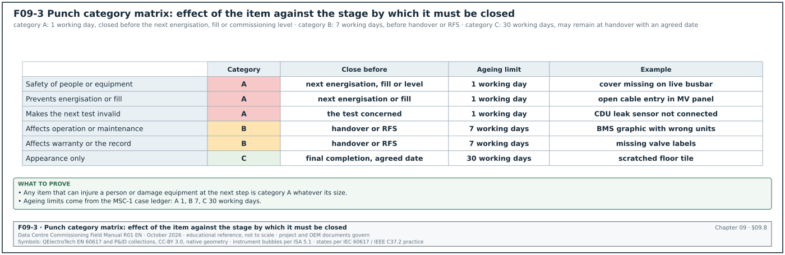
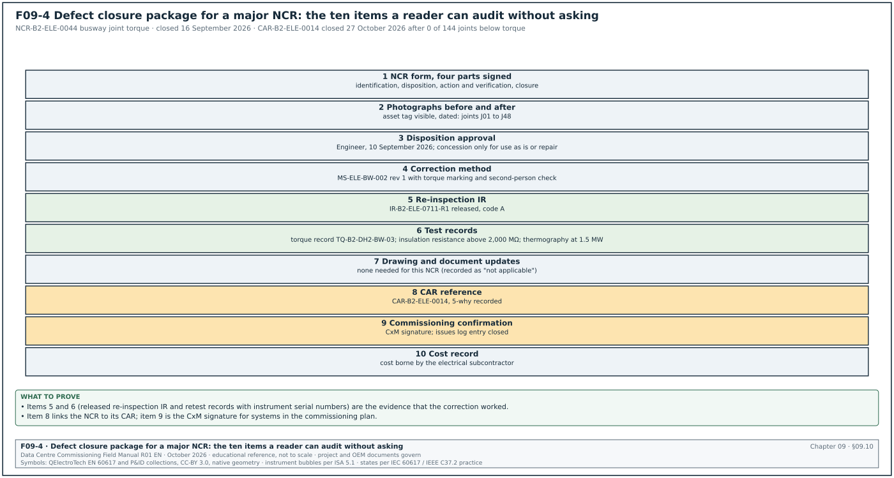
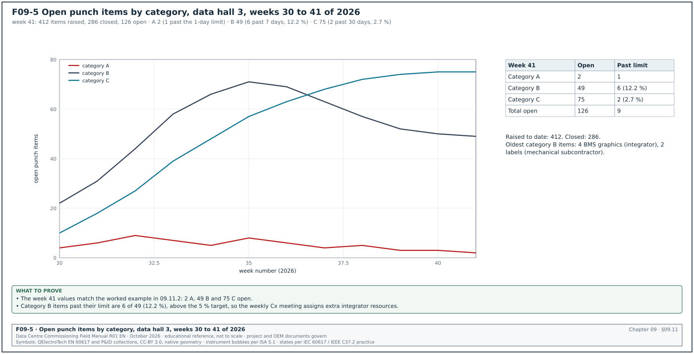

09.0Scope of this chapter
This chapter explains how a data-centre project records work that does not meet its requirements, decides what to do with it, removes the cause, and proves that each defect is closed. It starts with the basics: what a nonconformity is, why it needs a formal record, and how a non-conformance report (NCR), a corrective action request (CAR), a punch list and a commissioning issues log differ. It also gives the disposition rules, the root-cause methods, the punch categories, the retest rules, the closure evidence, the ageing key performance indicators (KPIs) and the handling of defects during the defects liability period (DLP). Chapter 07 covers the inspections that find most nonconformities. Chapter 08 covers the decision whether a finding is a defect or a change.
- Terms. Nonconformity, defect, deficiency, observation, punch item, commissioning issue, NCR, CAR, corrective and preventive action (CAPA), concession and deviation, with the ISO 9001:2015 meaning of correction and corrective action.
- Which record to raise. A decision table for NCR, punch item, issues log entry and observation.
- NCR form, categories and workflow. Fields, severity and origin categories, roles and time limits, with a workflow figure.
- Disposition. Use as is, repair, rework, reject (and regrade), who may decide each one, and a decision tree.
- Corrective action. CAR fields, 5-why analysis, cause-and-effect diagram, the 8D method and the A3 report, and how effectiveness is verified.
- Punch lists. Categories A, B and C with definitions and ageing limits, the punch walk procedure and the punch list fields.
- Retest rules and closure evidence. What triggers a retest, how much is retested, and the contents of a defect closure package.
- Ageing KPIs and the DLP. Defect ageing measures, a plot of open items, and defect handling under FIDIC 2017 clause 11, NEC4 ECC clauses 43 to 46, AIA A201-2017 section 12.2 and Indonesian provisional and final handover practice.
- Worked examples. NCRs on busway joint torque, on a coolant distribution unit (CDU) filter mesh, on a Modbus register map version and on fibre polarity.
Documents and standards used: ISO 9001:2015 clauses 8.7 (control of nonconforming outputs) and 10.2 (nonconformity and corrective action); FIDIC Conditions of Contract for Construction, second edition 2017, sub-clauses 7.5, 7.6 and clause 11. The chapter also uses NEC4 Engineering and Construction Contract (ECC) clauses 43 to 46, AIA A201-2017 sections 9.8 and 12.2 and UFGS 01 45 00 Quality Control section 1.8.6. It also uses ASHRAE Guideline 0-2019 and ASHRAE Standard 202-2024 (issues log, deferred testing), ANSI/NETA ATS-2025, ANSI/TIA-568.3-E (which replaced -D in September 2022), the Ford 8D method, Perpres 16/2018 Pasal 57 and the MSC-1 case ledger.
09.1Terms and what each one means on site
09.1.1Definitions
| Term | Definition used in this manual | Example on MSC-1 |
|---|---|---|
| Requirement | what the contract documents, the approved submittals, the original equipment manufacturer (OEM) manual or the law require | busway joint bolts tightened to the OEM torque |
| Nonconformity | non-fulfilment of a requirement (ISO 9000:2015 definition) | 9 joints found below the OEM torque |
| Defect | a nonconformity in the work; contracts use "defect" for work not in accordance with the contract | CDU filter element with 100 µm mesh where 25 µm is specified |
| Deficiency | term used in commissioning and in UFGS 01 45 00 for work that does not comply; same meaning as defect | missing earth bonding jumper on cable tray |
| Observation | a condition that does not breach a requirement but may lead to one; no NCR | cable drums stored on soft ground before forecast rain |
| Punch item (snag) | a small defect or incomplete item listed during a punch walk, closed on the punch list | missing label on a valve |
| Commissioning issue | an entry in the commissioning issues log: any problem found in the commissioning process, including design issues and test failures | CDU leak alarm not received at the building management system (BMS) |
| Correction | action to eliminate a detected nonconformity (ISO 9000:2015) | re-torque the 9 joints |
| Corrective action | action to eliminate the cause of a nonconformity and prevent recurrence (ISO 9000:2015) | add torque marking and a second-person check to the busway method |
| Preventive action | action to eliminate the cause of a potential nonconformity | apply the torque marking rule to switchboard bus links before their installation starts |
| Concession | permission to use or release work that does not conform to the specified requirements | accept a valve label in a different font for the remaining 4 weeks before final labels arrive |
| Deviation permit | permission, before the work is done, to depart from the specified requirements for a limited quantity or time | permission to use an equivalent gland type for 20 cable entries |
09.1.2Correction and corrective action under ISO 9001:2015
ISO 9001:2015 separates two duties.
- Clause 8.7, control of nonconforming outputs. The organisation identifies and controls outputs that do not conform, to prevent their unintended use or delivery. The clause applies to nonconforming outputs detected before delivery and to nonconforming products and services detected after delivery. The organisation deals with them in one or more of four ways: correction; segregation, containment, return or suspension of provision; informing the customer; and obtaining authorisation for acceptance under concession. Conformity is verified again after correction.
- Clause 8.7.2, records. The organisation retains documented information that describes the nonconformity, describes the actions taken, describes any concessions obtained, and identifies the authority deciding the action. On a construction project the NCR form is this documented information.
- Clause 10.2, nonconformity and corrective action. When a nonconformity occurs, the organisation first reacts to it: it controls and corrects the nonconformity and deals with the consequences. It then evaluates whether action is needed to remove the causes, so that the nonconformity does not recur or occur elsewhere. The evaluation reviews the nonconformity, determines its causes and checks whether similar nonconformities exist. The organisation implements the action needed, reviews its effectiveness, and updates the risks and the quality system if necessary. The CAR is the record of this work.
A correction removes the defect; a corrective action removes its cause. Re-torquing 9 busway joints is a correction. Changing the installation method so that no joint can be left untorqued is a corrective action. An NCR is closed by a correction and a verified disposition. A CAR is closed only when the corrective action has been shown to be effective.
09.2Which record to raise
09.2.1Decision table
| Condition found | Record | Who raises it | Typical closure time |
|---|---|---|---|
| Work does not meet a requirement, and the correction needs a technical decision, a design input, a concession, or affects other work | NCR | anyone who finds it; the quality assurance and quality control (QA/QC) manager registers it | 5 to 15 working days |
| Work does not meet a requirement, correction is simple and obvious, no design input needed, found during a punch walk | punch item | inspector or commissioning manager (CxM) on the punch walk | category A 1 working day, B 7 working days, C 30 working days (case ledger) |
| Work does not meet a requirement and is corrected the same day it is found | comment on the inspection request (IR) only; no NCR | inspector | same day |
| A commissioning test fails, a sequence does not work, a design issue is found, or a requirement is unclear | commissioning issues log entry; plus NCR if it is a nonconformity in the work | CxM | per issue priority |
| The same nonconformity occurs three or more times, a hold point is bypassed, or an NCR is major | CAR, linked to the NCRs | QA/QC manager or Engineer | 20 to 40 working days to verify effectiveness |
| A condition that may lead to a nonconformity | observation in the surveillance report | inspector | next inspection |
UFGS 01 45 00 uses a similar rule for its deficiency list: "There is no requirement to report a deficiency/rework item that is corrected the same day it is discovered."
09.2.2Rules that apply to every record
- One item, one record. Each defect has one record. A punch item that grows into an NCR is closed on the punch list with the note "transferred to NCR-xxxx".
- Location and tag. Every record states the building, the room, the grid and the asset tag.
- Requirement cited. Every record states the requirement that is not met: document, clause or page.
- Photograph. Every record has at least one photograph of the defect with the asset tag visible where possible.
- No closure without evidence. No record is closed on a statement alone. Section 09.10 lists the evidence.
09.3NCR form fields
The NCR form has four parts: identification and description (raised by the finder), disposition (proposed by the contractor, approved by the Engineer), action and verification (contractor and inspector) and closure (QA/QC manager and Engineer). Figure F09-6 shows the four parts filled for NCR-B2-ELE-0044, with the date of each entry checked against the time limits of section 09.5.1.


| Field | Type | Example value |
|---|---|---|
| NCR number | text, unique | NCR-B2-ELE-0044 |
| Date raised | date | 8 September 2026 |
| Raised by (name, role, company) | text | Engineer's representative, electrical |
| Project, building, room, grid | text | MSC-1, B2, data hall 2, grid E4 to E9 |
| System and asset tags | list | B2-DH2-BW-03 joints J01 to J48 |
| Discipline and package | code | ELE, electrical subcontractor ES-02 |
| Source of detection | code | inspection and test plan (ITP) line, IR, punch walk, test, audit, supplier, client |
| Reference IR or test record | text | IR-B2-ELE-0711 |
| Requirement not met | text | busway OEM installation manual section 5, joint torque value on the joint label; specification 26 25 00 clause 3.2 |
| Description of nonconformity | text | 9 of 48 joints measured below the label torque; torque marks absent on 14 joints |
| Severity | code | major or minor (09.4.1) |
| Origin category | code | workmanship (09.4.2) |
| Containment action taken | text | busway run B2-DH2-BW-03 locked out; energisation permit withdrawn |
| Proposed disposition | code | rework |
| Proposed correction method | text | re-torque all 48 joints with calibrated wrench, mark each joint, second-person check, insulation resistance test |
| Proposed by, date | text | ES-02 QC engineer, 9 September 2026 |
| Disposition approved by, date | text | Engineer's representative, 10 September 2026 |
| Designer input required | yes or no | no |
| Owner or client notification required | yes or no | no |
| Correction completed, date | date | 11 September 2026 |
| Verification method and record | text | re-inspection IR-B2-ELE-0711-R1; torque record TQ-B2-DH2-BW-03 |
| Retest required | list | insulation resistance of the run; thermographic scan at L3 load |
| CAR required, CAR number | yes or no, text | yes, CAR-B2-ELE-0014 |
| Cost borne by | code | contractor |
| Closed by, date | text | GC-A QA/QC manager and Engineer, 16 September 2026 |
| Attachments | list | photographs 1 to 9, torque record, IR test sheet |
09.4NCR categories
09.4.1Severity
| Severity | Definition | Examples | Rules |
|---|---|---|---|
| Major | affects safety, the function or the reliability of a system, the warranty, a statutory requirement, or needs a design decision or a concession to accept | busway joints under-torqued; wrong current transformer (CT) ratio; fibre polarity reversed; leak alarm register mapped wrongly | Engineer approves the disposition; containment within 1 working day; CAR required |
| Minor | does not affect safety, function, reliability or warranty; correction restores conformity with no design input | wrong cable tie type; label font; missing gland shroud | QA/QC manager approves the disposition; CAR when repeated three or more times |
09.4.2Origin categories
| Code | Origin | Typical data-centre examples |
|---|---|---|
| WK | workmanship | torque, termination, bending radius, earthing, pipe support spacing |
| MT | material or equipment | wrong filter mesh delivered, wrong cable type, damaged unit on delivery |
| SP | supplier or factory | factory test not done, wrong firmware loaded at factory |
| DS | design | drawing error found during installation; design conflict |
| DC | documentation | missing certificate, wrong revision used, unsigned checklist |
| PR | process | hold point bypassed, instrument out of calibration used, test done without permit |
| CF | configuration and software | wrong register map, wrong set point, wrong network address |
| TS | test failure | an L2 or L3 test result outside the acceptance value |
The origin category is the basis of the trend analysis in 09.11. A design-origin NCR is also checked against the decision tree in chapter 08, because the correction may be a change.
09.5NCR workflow with roles and time limits


09.5.1Procedure
Figure F09-1 shows the workflow. The time limits are those in the MSC-1 quality plan.
Purpose: Record a nonconformity, contain it, decide its disposition, correct it, verify the correction and close the record.
Trigger: An inspection, test, punch walk, audit or report finds work that does not meet a requirement and cannot be corrected the same day.
Owner: General contractor (GC) QA/QC manager for the register; the Engineer for major dispositions.
Steps:
- Raise the NCR. The finder fills the identification and description part and sends it to the QA/QC manager the same working day.
- Register and notify. The QA/QC manager registers the NCR, gives it a number and notifies the subcontractor, the Engineer and, for any system in the commissioning plan, the CxM, within 1 working day.
- Contain. The subcontractor contains the nonconformity within 1 working day. Containment means one or more of: tag the item "nonconforming, do not use", segregate it, lock it out, withdraw the permit to energise or fill, or stop the work front. The containment is recorded on the NCR.
- Propose disposition. The subcontractor proposes the disposition, the correction method, the retest and the cause within 3 working days.
- Review and approve. The QA/QC manager (minor) or the Engineer (major) reviews the proposal within 3 working days and approves it, rejects it or returns it for more information. A disposition of "use as is" or "repair" on a major NCR needs the designer's written agreement.
- Correct. The subcontractor corrects the item as approved within the time stated on the NCR (MSC-1 default: 10 working days for major, 5 working days for minor).
- Verify. The subcontractor raises a re-inspection IR. The inspector verifies the correction and witnesses any retest.
- Raise CAR if required. For a major NCR, a repeated minor NCR (three or more of the same type in 4 weeks) or a process NCR, the QA/QC manager raises a CAR (09.7).
- Close. The QA/QC manager and the Engineer close the NCR when the closure evidence in 09.10 is filed. The CxM confirms closure for any system in the commissioning plan.
Acceptance: The NCR shows containment, approved disposition, correction, verification by IR, retest results where required, CAR reference where required, and closure signatures.
Records: NCR register, NCR form, photographs, re-inspection IR, test records, CAR.
09.5.2NCR register fields
| Field | Type | Example value |
|---|---|---|
| NCR number | text | NCR-B2-MEC-0027 |
| Date raised | date | 19 August 2026 |
| Severity and origin | code | major, MT |
| System and tag | text | B2-DH3-CDU-07 |
| Short description | text | filter element 100 µm installed; 25 µm specified |
| Disposition | code | rework |
| Due date | date | 2 September 2026 |
| Status | code | open, contained, disposition approved, corrected, verified, closed |
| Days open | number | 9 |
| CAR | text | CAR-B2-MEC-0009 |
| Cost borne by | code | supplier through contractor |
| Closed date | date | open |
09.5.3Common errors in the NCR process
- No containment. The NCR is raised but the item stays in service and the next trade covers it. Record containment within 1 working day and check it on the daily walk.
- Disposition proposed by the finder. The inspector writes "re-torque" on the NCR and the subcontractor treats it as approved. The subcontractor proposes, the authority approves; the inspector records only the finding.
- Closure on a signature only. The NCR is closed with "done" and a signature. Closure needs the evidence in 09.10.
- NCR for a design change. A design-origin NCR is corrected by the contractor and later claimed. Apply the chapter 08 decision tree before approving the disposition.
09.6Disposition: use as is, repair, rework, reject


09.6.1Definitions
| Disposition | Meaning | Result | Who may approve on MSC-1 |
|---|---|---|---|
| Use as is | accept the item without correction because it still meets the intended function | the item stays nonconforming to the document; a concession is recorded and the as-built record shows the departure | Engineer with designer's written agreement; owner informed for major NCRs |
| Repair | correct the item by a method that makes it fit for use but not fully to the original requirement | the item is fit for use; a concession records the remaining departure | Engineer with designer's written agreement |
| Rework | correct the item so that it fully meets the original requirement | the item conforms; no concession needed | QA/QC manager (minor) or Engineer (major) |
| Reject | remove and replace the item, or return it to the supplier | a new conforming item is installed and inspected | QA/QC manager (minor) or Engineer (major) |
| Regrade | use the item for another, less demanding purpose where it conforms | the item is moved and recorded at its new location | Engineer |
Use as is and repair always need a concession and the designer's written agreement, because the work will remain different from the contract documents.
09.6.2Decision tree
Figure F09-2 shows the decision tree.
- Safety first. If the nonconformity affects safety of people or equipment and cannot be fully corrected in place, the disposition is reject.
- Rework when conformity is possible. If the item can be brought fully to the requirement by an approved method in place (re-torque, re-terminate, re-label, reconfigure), the disposition is rework.
- Check the function as it is. If it cannot be made to conform, ask the designer whether it still meets the function, the reliability and the warranty conditions as it is. If yes, the disposition may be use as is with a concession.
- Check a repair method. If it does not meet the function as it is, ask whether a repair method approved by the designer and the OEM makes it fit for use. If yes, the disposition is repair with a concession.
- Otherwise reject. If none of the above applies, the disposition is reject.
- Owner acceptance. For use as is or repair on a major NCR, the owner's construction manager (CM) is informed in writing. Under NEC4 clause 45 a defect is accepted only through a proposal to change the Scope that the Project Manager accepts; the Prices may then be reduced. Under FIDIC and AIA the acceptance is recorded as described in 09.6.3.
09.6.3Contract basis for dispositions
| Contract | Rejection and remedial work | Acceptance of a defect |
|---|---|---|
| FIDIC 2017 | 7.5: the Engineer rejects defective plant, materials, design or workmanship. 7.6: the Engineer instructs replacement or remedial work; if the Contractor fails, others do it at the Contractor's cost | no sub-clause lets the Engineer accept defective work as it is; if the Contractor fails to remedy a defect, sub-clause 11.4 lets the Employer obtain a reasonable reduction in the Contract Price by agreement or determination (confirm the 2017 wording against FIDIC 2017 sub-clause 11.4(b)) |
| NEC4 ECC | clause 44: the Contractor corrects a notified defect before the end of the defect correction period; clause 46: if not corrected, the Contractor pays the cost of having it corrected by others | clause 45: the Contractor or the Project Manager may propose to change the Scope so that the defect does not have to be corrected; if accepted, the Prices, the Completion Date and Key Dates may be reduced |
| AIA A201-2017 | section 12.2.1: before Substantial Completion the Contractor promptly corrects rejected work at its expense, including additional testing and inspection; section 12.2.3: nonconforming work is removed from the site | section 12.3: the Owner may accept nonconforming work without requiring correction, with an appropriate and equitable reduction in the Contract Sum |
| ISO 9001:2015 | 8.7.1: correction, segregation, containment, return or suspension | 8.7.1 d): acceptance under concession; 8.7.2 c): concession recorded |
09.6.4Concession request fields
| Field | Type | Example value |
|---|---|---|
| Concession number | text | CON-B2-0008 |
| Linked NCR | text | NCR-B2-MEC-0031 |
| Requirement departed from | text | specification 23 21 13 clause 2.6, pipe support spacing 2.4 m maximum |
| Actual condition | text | 2.7 m spacing at 3 supports above the hall 3 technology cooling system (TCS) header, because of a cable tray crossing |
| Technical justification | text | designer's stress check for DN 200 steel full of water shows deflection 1.8 mm, within the designer's limit |
| Limit of quantity or time | text | 3 supports, grid F2 to F4, permanent |
| Designer agreement | name, date | engineer of record (EOR), mechanical, 2 October 2026 |
| Owner informed | name, date | CM, 3 October 2026 |
| As-built note | text | note added on B2-M-TCS-310 rev E |
| Price adjustment | money | none |
09.7Corrective action: CAR, 5-why, 8D and A3
09.7.1When a CAR is raised
- Major NCR. Every major NCR has a CAR, unless the QA/QC manager records why the cause is already controlled by an open CAR.
- Repeat. Three or more NCRs or punch items with the same origin and description within 4 weeks.
- Process failure. Any NCR with origin PR (hold point bypassed, expired calibration used, test without permit).
- Audit finding. A nonconformity found in a quality audit of the contractor's system.
- Supplier. A nonconformity that originates at a supplier or factory; the CAR goes to the supplier through the contractor.
09.7.2CAR fields
| Field | Type | Example value |
|---|---|---|
| CAR number | text | CAR-B2-ELE-0014 |
| Linked NCRs | list | NCR-B2-ELE-0044, -0046, -0049 |
| Issued to | text | electrical subcontractor ES-02 |
| Problem statement | text | busway joints left below OEM torque in halls 1 and 2; 21 joints in 3 runs |
| Containment | text | all busway runs in B2 locked out pending torque audit |
| Root cause (method and result) | text | 5-why, see 09.7.3 |
| Corrective action | text | method statement revised; torque marking; second-person check; daily wrench check |
| Preventive action (other places) | text | same rule applied to switchboard bus links and generator terminal boxes |
| Owner of action, due date | text | ES-02 construction manager, 30 September 2026 |
| Effectiveness check | text | torque audit on next 3 busway runs: 0 joints below torque |
| Effectiveness result | text | 0 of 144 joints below torque, 26 October 2026 |
| Closed by, date | text | GC-A QA/QC manager, 27 October 2026 |
09.7.3The 5-why method
The 5-why method asks "why" in a sequence, each answer becoming the next question, until the answer is a cause that the project can control. The number five is a guide. Stop when the cause is one that a corrective action can remove. Write each answer as a fact that can be checked.
Worked example: For CAR-B2-ELE-0014 (busway joints under torque), the QA/QC manager records:
| Step | Question | Answer (checked fact) |
|---|---|---|
| 1 | Why were the joints below torque | the installers tightened the joints with an impact driver and did not complete the final torque with the torque wrench |
| 2 | Why did they not complete the final torque | one torque wrench was available for two crews; the second crew moved on to the next section and planned to return |
| 3 | Why did nobody detect the joints that were left | the joints had no torque mark, so a tightened joint and an untightened joint looked the same |
| 4 | Why was there no torque mark | the method statement MS-ELE-BW-002 rev 0 did not require torque marking |
| 5 | Why did the method statement not require it | the OEM manual recommends marking but the method statement template did not have a torque-mark step |
The corrective actions are one calibrated torque wrench per crew and torque marking with a paint pen after the final torque. They also include a second-person check of the marks before the IR and the method statement template revised for all bolted electrical joints. The result is verified by a torque audit of the next three runs.
09.7.4Cause-and-effect diagram
When several causes may act together, draw a cause-and-effect (Ishikawa) diagram with six branches: people, method, material, machine (tools and instruments), measurement and environment. Write the possible causes on the branches, then test each one with a fact (a record, a measurement, a witness statement). Only causes supported by facts go into the CAR.
09.7.5The 8D method
The eight disciplines (8D) method was first described in a Ford Motor Company manual in 1987. It is used for major or repeated problems, especially those that involve a supplier. The steps are below; D0 was added later as a planning step.
| Step | Name | What is done on a data-centre project | Record |
|---|---|---|---|
| D0 | plan | decide that 8D is needed; set emergency response (lock out, stop shipments) | CAR header |
| D1 | form the team | name the people with product and process knowledge: QA/QC manager, subcontractor engineer, OEM start-up engineer, CxM | team list |
| D2 | describe the problem | state what, where, when, how many, with data; use "is" and "is not" comparison | problem statement |
| D3 | interim containment | protect the work: quarantine stock, inspect installed units, add a temporary check | containment record |
| D4 | root cause and escape point | find the root cause of the occurrence and the escape point, the earliest control that should have detected it | 5-why, cause-and-effect diagram, test results |
| D5 | choose permanent corrective actions | select actions and show that they remove the cause | action list with evidence |
| D6 | implement and validate | implement and confirm by data that the problem no longer occurs | validation data |
| D7 | prevent recurrence | update procedures, templates, factory tests, training | revised documents |
| D8 | close and recognise | close the 8D, record lessons, recognise the team | closed 8D report |
09.7.6The A3 report
An A3 report puts the problem on one sheet of A3 paper in a fixed order: background, current condition with data, goal, root cause analysis, countermeasures, implementation plan with owners and dates, and follow-up check. On MSC-1 the A3 format is used for problems that cross several contractors, because one sheet can be reviewed in a 30-minute meeting. An example is repeated BMS integration failures that involve the OEM, the integrator and the network contractor.
09.7.7Verifying effectiveness
- Define the check before closing. Write the effectiveness check on the CAR when the action is approved: what is measured, on how many items, by when.
- Measure on new work. The check uses work done after the corrective action. The corrected items do not count in the sample.
- Use a sample large enough to see the problem. If the problem rate was 9 in 48 (19 %), a sample of 10 joints still has a 12 % chance of showing 0 failures when nothing has changed. A sample of 144 joints with 0 failures gives a clear result, because that chance falls below 0.000 000 1 %.
- Close or reopen. If the check passes, close the CAR. If it fails, reopen the root-cause step.
09.8Punch lists


09.8.1What a punch list is
A punch list (snag list) is the list of small defects and incomplete items found when the work is close to complete. AIA A201-2017 section 9.8.2 requires the Contractor, when it considers the work substantially complete, to "prepare and submit to the Architect a comprehensive list of items to be completed or corrected prior to final payment", and states that failure to include an item does not alter the Contractor's responsibility. On a data-centre project, punch walks happen at several stages: before each energisation, before each commissioning level, before ready for service (RFS) and before handover.
09.8.2Punch categories
The MSC-1 programme uses three categories. The case ledger sets the ageing limits.
| Category | Definition | Examples | Must be closed before | Ageing limit |
|---|---|---|---|---|
| A | affects safety, prevents energisation, filling or the next commissioning test, or would make a test result invalid | missing earth bond on a switchboard; open cable entry into a medium-voltage (MV) panel; CDU leak sensor not connected; protective cover missing on a live busbar | the next energisation, fill or commissioning level | 1 working day |
| B | does not prevent the next test, but must be closed before handover or RFS because it affects operation, maintenance, warranty or the record | missing valve labels; BMS graphic with wrong units; incomplete operation and maintenance (O&M) manual section; damaged paint on a CDU frame | handover of the system or RFS of the hall | 7 working days |
| C | minor or cosmetic item that may remain at handover with an agreed date, without affecting operation or safety | scratched floor tile; label font different from the standard; door closer adjustment in a corridor | final completion or the end of the agreed period | 30 working days |
Figure F09-3 shows the category matrix: the effect of the item (safety, test validity, operation, record, appearance) against the stage at which it must be closed.
09.8.3Rules for assigning a category
- Safety decides first. Any item that can injure a person or damage equipment at the next step is category A, whatever its size.
- Test validity next. An item that would make the next test result unreliable (a sensor not calibrated, a valve in the wrong position, a flow meter not installed) is category A for that test.
- Operation and record. Items needed for the operator to run and maintain the system (labels, graphics, manuals, spares) are category B.
- Appearance last. Items that affect only appearance are category C.
- Disagreement. If the contractor and the inspector disagree, the CxM decides for systems in the commissioning plan; the Engineer decides for other work.
09.8.4Punch list fields
| Field | Type | Example value |
|---|---|---|
| Item number | text | PL-B2-DH3-0587 |
| Date raised | date | 6 October 2026 |
| Raised by | text | CxM, building B2 |
| Punch walk reference | text | PW-B2-DH3-L4-02 (pre-L4 walk, hall 3) |
| Location and grid | text | B2 data hall 3, grid G6 |
| System and asset tag | text | B2-DH3-CDU-11 |
| Description | text | leak detection cable under CDU not connected to the CDU controller terminal LD1 |
| Requirement | text | CDU OEM installation manual section 7.3; drawing B2-M-CDU-410 rev C |
| Category | code | A |
| Responsible contractor | text | mechanical subcontractor MS-01 |
| Due date | date | 7 October 2026 |
| Photograph before | file | PL-0587-1.jpg |
| Action taken | text | cable connected; leak simulated with water on the sensing cable; alarm at CDU and at BMS |
| Photograph after | file | PL-0587-2.jpg |
| Verified by, date | text | CxM, 7 October 2026 |
| Status | code | open, ready for verification, closed, transferred to NCR |
09.8.5Punch walk procedure
Purpose: Find and record every remaining defect in a defined area before a stated milestone.
Trigger: The contractor declares the area or system ready for the milestone (energisation, next commissioning level, RFS, handover).
Owner: CxM for commissioning milestones; Engineer for handover.
Steps:
- Contractor self-punch. The contractor walks the area first and closes its own items. It issues its own list with the closed items. Allow 3 working days.
- Plan the walk. The CxM fixes the date, the area boundaries, the systems and the attendees: CxM, Engineer's inspector, contractor QC, subcontractor supervisors, owner's operations representative.
- Walk by system and by room. Walk with the drawings and the checklists. Open panels where safe and permitted. Record each item with its tag, photograph and category on a tablet linked to the punch database.
- Agree categories on the spot. The CxM and the contractor QC agree the category for each item before leaving the room and record it on the punch list.
- Issue the list. The CxM issues the list within 1 working day with due dates set from the category limits.
- Close items. The contractor closes each item and marks it "ready for verification" with a photograph after correction.
- Verify. The inspector who raised the item, or a named delegate, verifies on site and closes it. Category A items are verified before the milestone.
- Milestone decision. The milestone proceeds when all category A items for the systems in scope are closed. Open category B and C items are listed in the milestone record with their due dates.
Acceptance: Zero open category A items for the milestone; all B and C items have a responsible contractor and a due date.
Records: Punch list export, photographs, milestone record.
09.9The commissioning issues log and deferred tests
09.9.1Issues log
ASHRAE Standard 202 requires an issues log that lists each continuing issue with the person or organisation responsible for its resolution. The log is kept until every issue is resolved or accepted by the owner. ASHRAE Guideline 0-2019 gives the recommended practice beyond the Standard 202 minimum. The final commissioning report includes the issues and resolution log.
Issues and punch items use one urgency scheme: category A, B or C. The definitions and ageing limits are those of section 09.8.2 (A 1 working day, B 7 working days, C 30 working days in the MSC-1 worked example). The codes P1, P2 and P3 are kept for two other quantities: the request for information (RFI) response priority (section 05.5.3) and the alarm priority of the BMS and the electrical power monitoring system (EPMS) (section 21.11). An issues log, a punch list, an integrated systems testing (IST) issue log or a form never uses P1 to P3 for issue urgency. Issue numbers follow the register pattern of section 05.3.2: ISS-building-sequence (ISS-B2-1412), with IST issues in the IST series of the hall (IST-DH3-014).
| Field | Type | Example value |
|---|---|---|
| Issue number | text | ISS-B2-1412 |
| Date found | date | 14 September 2026 |
| Found during | text | L3 load bank test, block B2-DH3-BLK-04 |
| System | text | EPMS, block main meter |
| Description | text | meter reads 75 % of true current; CT ratio setting 3,000/5 A, CT nameplate 4,000/5 A |
| Category | code | A, B or C, with the definitions and ageing limits of the punch categories in section 09.8.2 |
| Type | code | design, installation, configuration, test procedure, owner's project requirements (OPR) |
| Linked record | text | RFI-B2-ELE-0388, design change notice DCN-E-0105, variation order VO-B2-023 (chapter 08) |
| Responsible party | text | EPMS integrator and switchboard manufacturer |
| Resolution | text | meters reconfigured; CTs replaced on blocks 07 and 08 |
| Retest record | text | CX-L3-B2-DH3-EPMS-04 rerun 21 September 2026 |
| Status and date closed | code, date | closed, 22 September 2026 |
09.9.2How the issues log, NCR and punch list connect
- Issue first. Every commissioning problem goes in the issues log, even if it is also an NCR or a punch item, so the commissioning record is complete.
- NCR for nonconforming work. If the issue is a nonconformity in the work, the QA/QC manager raises an NCR and the issue log entry references it.
- Punch for simple items. If the issue is a simple item found on a punch walk, it is a punch item and the issue log may hold one summary entry per walk.
- Change for design or OPR issues. If the issue needs a design change or an OPR change, it goes through the chapter 08 decision tree.
09.9.3Deferred and seasonal tests
A deferred test is a test that cannot be performed, or cannot be performed conclusively, during the construction-phase acceptance period, for example because the information technology (IT) load is not yet installed. A seasonal test is a functional test performed near design weather conditions, for example dry cooler performance at the design dry-bulb temperature of 34 °C in the MSC-1 case. Each deferred test is recorded in the issues log with: the test, the reason for deferral, the condition that allows the test, the planned date or season, and the person responsible. On MSC-1 the dry cooler full-capacity test is deferred to the hottest month after RFS, and the issue stays open as category C until the test record is signed.
09.10Retest rules and the defect closure package


09.10.1Retest rules
When a defect is corrected, the inspection or test that found it is repeated. The correction may also disturb other work, so the retest scope can be wider than the item. The table gives the MSC-1 rules.
| Correction | Minimum retest | Wider retest when |
|---|---|---|
| Re-torque of a bolted electrical joint | torque check of the joint; insulation resistance of the circuit if it was opened | joints opened in a run: insulation resistance of the whole run; thermographic scan at load |
| Re-termination of an MV cable | full test set on that cable (insulation resistance, very low frequency (VLF) withstand, partial discharge (PD) test where specified) | the termination kit type has failed twice: witness the next kit of each jointer |
| Replacement of a CT or a meter | meter accuracy check against a reference; CT ratio and polarity check | the CT shorting block was rewired: secondary injection of the protection relays on the same CTs |
| Firmware or configuration change in a controller | point-to-point check of the points affected; the sequence steps affected | the change affects a common library or map: retest all controllers of that type |
| Replacement of a pipe section or joint | pressure test of the section | flushing of the section and the downstream equipment strainers |
| Change of a filter or strainer element | differential pressure reading at design flow | flushing water quality test if debris was found |
| Fibre re-termination or cassette change | end-face inspection and loss test on the affected fibres; polarity check | trunk replaced: all tests on all fibres of the trunk |
| Correction during L4 or L5 | the failed test step and every earlier step whose result could change | the CxM decides; the decision is recorded on the test script |
Rules that apply to every retest:
- Same procedure. The retest uses the same procedure, instruments of the same class, and the same acceptance value as the original test, unless an approved change revised them.
- Same witnesses. The parties who witnessed the original test are notified of the retest with the same notice period.
- Record both results. The failed result stays in the record. The retest result is added with a reference to the NCR or punch item.
- Retest cost. Under AIA A201-2017 section 13.4.3 and section 12.2.1, the cost of repeated tests and of correcting rejected work is the Contractor's; FIDIC 2017 and NEC4 have similar provisions (chapter 07).
09.10.2Defect closure package anatomy
Every major NCR is closed with a package that a reader can audit without asking anyone. Figure F09-4 shows the contents.
- NCR form. All four parts complete with signatures.
- Photographs before and after. With the asset tag visible and the date.
- Disposition approval. The signed approval, plus the designer's written agreement and the concession for use as is or repair.
- Correction method. The method statement or the work instruction used, with its revision.
- Re-inspection IR. The released IR for the corrected work.
- Test records. The retest sheets with instrument serial numbers and calibration certificate references.
- Drawing and document updates. Red-line mark-ups or revised drawings if the correction changed anything shown on a drawing.
- CAR reference. The CAR number, or the reason why none is required.
- Commissioning confirmation. The CxM's signature for systems in the commissioning plan, with the issues log entry closed.
- Cost record. Who bears the cost; back-charge reference if the owner corrected the defect.
Check: Before signing closure, the QA/QC manager reads the package against this list of 10 items and writes "complete" or the missing item number on the NCR.
09.11Defect ageing KPIs


09.11.1Measures
| KPI | Formula | MSC-1 target |
|---|---|---|
| Open items by category | count of open punch items per category on the report date | category A open more than 1 working day: 0 |
| Age of open items | report date minus date raised, in working days | B not more than 7, C not more than 30 (case ledger) |
| Items past their ageing limit | count of open items with age above the category limit | 0 for A; not more than 5 % of open B and C |
| NCR closure time | median working days from raised to closed, major and minor | major not more than 15; minor not more than 8 |
| Repeat rate | NCRs with the same origin and description in 4 weeks / NCRs raised | not more than 10 % |
| First-pass yield | IRs released at first inspection / IRs inspected | at least 90 % (case ledger; chapter 07) |
| CAR effectiveness | CARs closed with effectiveness check passed / CARs closed | 100 % |
09.11.2Ageing calculation
Worked example: In the MSC-1 worked example, the CxM runs the punch report for data hall 3 on Friday 9 October 2026 (week 41). The punch database holds 412 items for hall 3: 286 closed and 126 open. Of the open items, 2 are category A, 49 are category B and 75 are category C. One category A item was raised on Wednesday 7 October (age 2 working days), above the 1-day limit. It is reported in red with the name of the responsible supervisor. Of the 49 category B items, 6 are older than 7 working days, which is 6 / 49 = 12.2 % above the limit and above the 5 % target. Of the 75 category C items, 2 are older than 30 working days (2.7 %). The CxM's report lists the 6 category B items by contractor: 4 are BMS graphics items for the integrator and 2 are labels for the mechanical subcontractor. The weekly Cx coordination meeting assigns the integrator an extra engineer for 3 days. Figure F09-5 plots the open items by category for weeks 30 to 41.
09.11.3Rules for the ageing report
- Count working days. Count age in working days, excluding the public holidays in the project calendar.
- Do not reset age on reassignment. An item that moves from one contractor to another keeps its original date raised.
- Report the oldest items by name. The report lists the 10 oldest open items in each category with the responsible person.
- Show the trend. Plot the open count by category each week; a flat or rising trend close to a milestone is escalated.
09.12Defects during the defects liability period
09.12.1What the DLP is
After taking over (practical completion, substantial completion, or provisional handover), the contractor remains responsible for remedying defects that appear during a period stated in the contract. The name differs by contract. FIDIC 2017 uses the Defects Notification Period (DNP). NEC4 uses the period up to the defects date, with a defect correction period for each defect. AIA A201-2017 uses the one-year correction period, and Indonesian contracts use the maintenance period, masa pemeliharaan.
| Contract | Period | Remedy rule | Final certificate |
|---|---|---|---|
| FIDIC 2017 | Defects Notification Period stated in the Contract Data, 365 days where none is stated, from the date in the Taking-Over Certificate | clause 11: the Contractor remedies notified defects within a reasonable time; if it fails, the Employer may have the work done at the Contractor's cost | Performance Certificate within 28 days after the latest DNP expires (sub-clause 11.9) |
| NEC4 ECC | until the defects date in the Contract Data | clauses 43 to 46, listed below the table | Defects Certificate at the later of the defects date and the end of the last defect correction period (clause 44.3) |
| AIA A201-2017 | one year after Substantial Completion (section 12.2.2.1), extended for work first performed after Substantial Completion (12.2.2.2), not extended by corrective work (12.2.2.3) | the Contractor corrects promptly after notice from the Owner; if the Owner fails to give notice and an opportunity to correct, it waives the right to require correction | final payment under section 9.10 |
| Indonesian government contract | maintenance period in the contract (sample contracts use 180 calendar days from provisional hand over (PHO)) | the provider maintains and remedies; 5 % retention or a maintenance bond is held | final hand over (FHO), serah terima akhir, then release of retention |
The NEC4 ECC defect clauses work as follows.
- Clause 43.2, notification. The Supervisor and the Contractor each notify a defect as soon as they become aware of it.
- Clause 44.2, correction period. The Contractor corrects a notified defect before the end of its defect correction period. The period starts at Completion for a defect notified before Completion, and at notification for a defect notified after Completion.
- Clause 44.4, parts taken over. For a part of the works taken over by the Client, the period starts when the Client gives access.
- Clause 46, uncorrected defects. A defect that is not corrected is corrected by others, and the Contractor pays the cost.
09.12.2Indonesian handover practice
Perpres 16/2018 Pasal 57 sets the handover steps. After the work is 100 % complete, the provider asks the commitment-making official, Pejabat Pembuat Komitmen (PPK), in writing for handover. The PPK inspects the work, and the PPK and the provider sign the handover record, Berita Acara Serah Terima. In public works practice this is the first handover, serah terima pertama or provisional hand over (PHO). The PPK then pays 95 % of the contract price and holds 5 % as retention (or accepts a maintenance bond) for the maintenance period. At the end of the maintenance period, if the work meets the contract, the parties sign the final handover record (FHO) and the PPK releases the retention or the bond. Private data-centre contracts in Jakarta use the same PHO and FHO terms with FIDIC-style defect clauses.
09.12.3Procedure for a defect during the DLP
Purpose: Notify, correct and close a defect found after taking over, in a live data centre, without risk to the IT load.
Trigger: The owner's operations team or a maintenance contractor finds a defect after taking over.
Owner: CM for notification; contractor for correction; owner's operations manager for access.
Steps:
- Record and notify. The operations team records the defect in the computerised maintenance management system (CMMS). The CM notifies the contractor in writing under the contract clause, the same working day for urgent defects and within 5 working days for others.
- Classify urgency. Urgent: affects redundancy, safety or the IT load (for example a CDU pump failure that leaves a zone at N). Normal: all others.
- Plan the access. The operations team issues a method of procedure (MOP) and a permit to work for the correction, with the change management approval of the live site. Contractor attendance for urgent defects: within the response time in the contract (MSC-1 example: 4 hours).
- Correct and retest. The contractor corrects the defect under the MOP and retests as in 09.10.1.
- Close and update records. The operations team closes the CMMS work order; the CM closes the DLP defect record; the as-built and O&M records are updated if anything changed.
- Extend where the contract allows. FIDIC 2017 sub-clause 11.3 extends the DNP for an item that cannot be used for its intended purpose because of a defect. The extension cannot exceed two years after the DNP stated in the Contract Data. Record the new end date for that item in the DLP defect register.
Records: CMMS work order, notice letter, MOP, permit, retest record, DLP defect register.
09.13Worked examples of NCRs
09.13.1NCR on busway joint torque
Worked example: In the MSC-1 worked example, the pre-energisation inspection of overhead busway run B2-DH2-BW-03 in data hall 2 takes place on 8 September 2026. The Engineer's inspector checks joints with a calibrated torque wrench set to the value on the OEM joint label (68 N·m is an example value; the governing value is on the joint label and in section 5 of the busway OEM installation manual). Nine of 48 joints turn before the wrench clicks, which shows they were below the label torque. Fourteen joints have no torque mark. The inspector raises NCR-B2-ELE-0044 (major, workmanship) the same day. Containment: the run is locked out and the energisation permit for the run is withdrawn. Disposition: rework, approved by the Engineer on 10 September. Correction: all 48 joints are released, inspected for damage and re-torqued with two calibrated wrenches; each joint receives a paint mark; a second person checks the marks. Retest: insulation resistance phase to phase and phase to earth at 1,000 V DC reads above 2,000 MΩ for every phase. The project minimum for low-voltage (LV) equipment is 100 MΩ (chapter 14). The thermographic scan at the level 3 (L3) load bank test of 1.5 MW on 15 September shows a maximum temperature difference of 0.8 K between similar joints. This is below the 1 °C to 3 °C band that ANSI/NETA Acceptance Testing Specifications (ATS) Table 100.18 marks as a possible deficiency for similar components under similar load (bands in section 14.13.2; confirm against ANSI/NETA ATS-2025 Table 100.18). CAR-B2-ELE-0014 records the 5-why in 09.7.3. The NCR closes on 16 September with the 10-item package; the CAR closes on 27 October after the audit of 144 joints in 3 further runs finds 0 below torque.
09.13.2NCR on a CDU filter mesh
Worked example: The technology cooling system specification for hall 3 requires a 25 µm filter element (the MSC-1 TCS filter rating in section 19.11.1) in each CDU secondary circuit. The reason is that the cold-plate manufacturer limits particle size in the rack loops. These are example values; the governing values are in the CDU OEM installation manual and the cold-plate manufacturer's coolant specification. On 19 August 2026 the mechanical inspector opens the filter housing of B2-DH3-CDU-07 during the pre-fill punch walk and reads "100 µm" on the element. The supplier's packing list shows that all 16 CDUs for hall 3 were shipped with 100 µm elements. The inspector raises NCR-B2-MEC-0027 (major, material) and the CxM records issue ISS-B2-1367. Containment: no CDU secondary circuit in hall 3 is filled; the elements in stock are quarantined. The contractor first proposes "use as is" for the flushing period. The designer does not agree, because flushing debris would pass into the rack manifolds. Disposition: reject, with 16 replacement 25 µm elements supplied by the CDU OEM within 9 working days. A temporary 100 µm element is allowed only in the flushing bypass loop, which does not connect to the racks. Retest: the differential pressure across each new element at design flow is recorded at L3 and compared with the OEM clean-element value. The cause is at the supplier (wrong part number in the factory bill of materials), so the contractor issues an 8D request to the CDU OEM. The 8D records three steps. D3 is the inspection of the units for halls 4 to 6 at the factory. D4 traces the root cause to a bill-of-materials revision not released to production. D7 adds the filter element part number to the factory final inspection checklist.
09.13.3NCR on a Modbus register map version
Worked example: The interface control document for the CDU to BMS interface states that CDU firmware 4.12.x uses register map CDU1-MB-MAP v3.2 (chapter 25). During the L3 point-to-point test on B2-DH3-CDU-03 on 2 September 2026, the CxM wets the leak sensor; the CDU display shows the leak alarm, but the BMS shows no alarm. The BMS reads holding register 40211 as the leak status; in map v3.2 the leak status is at register 40213, because v3.2 inserted two registers for a second pressure sensor. The BMS integrator had configured the CDUs from map v3.1. The CxM raises NCR-B2-BMS-0019 (major, configuration) and issue ISS-B2-1388 as category A, because a leak alarm that does not reach the BMS makes the hall unsafe to fill. Containment: the TCS fill of hall 3 is held. Disposition: rework; the integrator loads the v3.2 template for all 16 CDUs. Retest: because the map is common to all CDUs of the type, every mapped point on all 16 CDUs is retested. The leak alarm is tested on every CDU and the time from wetting to BMS alarm is recorded (all below 10 s, the limit in the interface control document). CAR-B2-BMS-0006 root cause: the integrator's template library held map versions without a link to the firmware version. Corrective action: each template carries the firmware range in its name and the L2 checklist adds "read CDU firmware version and confirm template version".
09.13.4NCR on fibre polarity
Worked example: The approved cabling submittal for building B2 states ANSI/TIA-568.3-D polarity method B for multi-fibre push-on (MPO) trunks, with method-B cassettes at both ends and A-to-B duplex patch cords. On 23 September 2026, at ITP-ICT-FO-001 line 4.3 (chapter 07), the polarity test runs on the link from the main distribution area (MDA), B2-MDA-01, to the intermediate distribution area (IDA) of hall 2, B2-DH2-IDA-02. The test shows that the transmit fibre at position 1 of the A-end arrives at position 1 of the B-end, where the receive position should be. The trunk label reads "Type A". Two of the 24 trunks between the MDA and hall 2 are Type A; the other 22 are Type B. The inspector raises NCR-B2-ICT-0011 (major, material and workmanship). Containment: the two trunks are tagged and excluded from the network turn-up plan. The installer proposes a repair: use A-to-A patch cords at one end of the two links. The CxM and the owner's network team do not agree. Operators would need to know that two links use different cords, and a later cord change would reverse the link. The disposition is reject; replace the two trunks with Type B trunks of the same length. Retest: end-face inspection, loss at 1310 nm and 1550 nm and polarity on all 144 fibres of each new trunk. Results: loss 0.96 dB to 1.31 dB against a budget of 3.35 dB; polarity correct on every fibre. CAR: the installer's receiving inspection now records the trunk type against the cabling schedule before a trunk leaves the store.
09.14Common errors and how to detect them early
| Error | How to detect it early | Correction |
|---|---|---|
| Defect corrected without a record | compare work fronts with the NCR and punch registers on the daily walk | raise the record retrospectively with the evidence |
| NCR closed without retest | closure package check list item 6 | reopen; retest |
| Use as is without designer agreement | disposition approval field empty for designer | stop; obtain agreement or change the disposition |
| Punch category set low to meet the milestone | CxM reviews every category A decision before the milestone | re-categorise; hold the milestone |
| CAR closed on the action without effectiveness check | CAR effectiveness result field empty | reopen; check new work |
| Age reset when item reassigned | database audit of date-raised changes | restore original date |
| DLP defect corrected without MOP | operations permit register | stop work; issue MOP |
| Same defect found in other halls | repeat-rate KPI rising | raise CAR; inspect all locations |
09.15Checklist for site use
- Right record. The finding is recorded as an NCR, punch item, issue or observation using the table in 09.2.1.
- Requirement cited. The record names the document and clause that is not met.
- Contained. A major NCR is contained within 1 working day and the containment is recorded.
- Disposition approved. The disposition is approved by the authority in 09.6.1; use as is and repair have the designer's agreement and a concession.
- Defect or change checked. Design-origin items are checked against the chapter 08 decision tree.
- Correction verified. A re-inspection IR is released for the correction.
- Retest done. The retest scope follows 09.10.1 and both results are kept.
- CAR raised. Major, repeated and process NCRs have a CAR with a defined effectiveness check.
- Punch categories agreed. Every punch item has an agreed category and a due date from the ageing limits.
- Category A cleared. Zero category A items are open before any energisation, fill or commissioning level.
- Ageing reported. Open items, ages and items past limit are reported weekly by category and contractor.
- Closure package complete. The 10-item package is complete before an NCR is closed.
- Issues log updated. Every commissioning problem is in the issues log with its linked records.
- DLP register kept. Defects after taking over are notified under the contract clause and closed with CMMS and retest records.
09.16Sources
- International Organization for Standardization, ISO 9001:2015 Quality management systems, Requirements, clauses 8.7 and 10.2. https://www.iso.org/standard/62085.html
- International Organization for Standardization, ISO 9000:2015 Quality management systems, Fundamentals and vocabulary (definitions of nonconformity, correction, corrective action, concession). https://www.iso.org/standard/45481.html
- The Core Solution, "ISO 9001:2015 Clause 8.7.1 explained", accessed 31 October 2026. https://www.thecoresolution.com/clause-8-7-1-iso-9001-2015-explained
- The Core Solution, "ISO 9001:2015 Clause 10.2 explained", accessed 31 October 2026. https://www.thecoresolution.com/clause-10-2-iso-90012015-explained
- ISMS.online, "ISO 9001 Clause 8.7 Control of nonconforming outputs", accessed 31 October 2026. https://isms.online/iso-9001/clause-8-7-control-of-nonconforming-outputs
- Wikipedia, "Eight disciplines problem solving", accessed 31 October 2026. https://en.wikipedia.org/wiki/Eight_disciplines_problem_solving
- FIDIC, Conditions of Contract for Construction (Red Book), second edition 2017, sub-clauses 7.5, 7.6 and clause 11. https://fidic.org/books/construction-contract-2nd-ed-2017-red-book
- RICS isurv, "Content of the pre-2017 FIDIC forms", accessed 31 October 2026. https://www.isurv.com/info/359/fidic/2669/content_of_the_pre-2017_fidic_forms/4
- NEC, "Defining and managing defects in ECC and liability for not correcting them", accessed 31 October 2026. https://www.neccontract.com/news/defining-and-managing-defects-in-ecc-and-liability-for-not-correcting-them
- Brodies, "Under NEC Contract, what is the connection between the defects date and the defect correction period", accessed 31 October 2026. https://brodies.com/insights/construction-and-engineering/under-nec-contract-what-is-the-connection-between-the-defects-date-dd-and-the-defect-correction-period-dcp/
- American Institute of Architects, A201-2017 General Conditions of the Contract for Construction, sample copy, sections 9.8, 12.2, 12.3 and 13.4, accessed 31 October 2026. https://www.maine.edu/general-services/wp-content/uploads/sites/34/2019/12/A201-2017-SAMPLE-100219-Accessible.pdf
- Whole Building Design Guide, UFGS 01 45 00 Quality Control, August 2023, section 1.8.6 Deficiency/Rework Items List, accessed 31 October 2026. https://www.wbdg.org/FFC/DOD/UFGS/01%2045%2000.pdf
- Consulting-Specifying Engineer, "ASHRAE Standard 202 on commissioning released" (issues log), accessed 31 October 2026. https://www.csemag.com/ashrae-standard-202-on-commissioning-released
- Engineered Systems, August 2018, commissioning classifications (deferred and seasonal testing), accessed 31 October 2026. https://digital.bnpmedia.com/article/Commissioning/3154465/516226/article.html
- ASHRAE, titles, purposes and scopes (Guideline 0-2019, Standard 202-2024), accessed 31 October 2026. https://www.ashrae.org/technical-resources/standards-and-guidelines/titles-purposes-and-scopes
- ANSI blog, "ANSI/NETA ATS-2025: Electrical Power Testing", accessed 31 October 2026. https://blog.ansi.org/ansi/ansi-neta-ats-2025-electrical-power-testing/
- Leviton, "Understanding Duplex Polarity" application note, accessed 31 October 2026. https://www.leviton.com/content/dam/leviton/network-solutions/product_documents/application_note/Leviton_AppNote_UnderstandingDuplexPolarity.pdf
- Peraturan Presiden Nomor 16 Tahun 2018, Pasal 57, accessed 31 October 2026. https://api-law.crpg.info/peraturan/perpres/16/2018/pasal/57
- Balai Besar Wilayah Sungai Serayu Opak, Kementerian PUPR, SOP Serah Terima Pertama Pekerjaan Konstruksi (PHO), accessed 31 October 2026. https://sda.pu.go.id/balai/bbwsserayuopak/storage/pdf/sop/CmSla-8.%20SOP%20Serah%20Terima%20Pertama%20Pekerjaan%20Konstruksi%20(PHO)_BBWS%20SO.pdf
- Direktorat Jenderal Perbendaharaan, Kementerian Keuangan, "Retensi bukan pemeliharaan", accessed 31 October 2026. https://djpb.kemenkeu.go.id/portal/id/berita/lainnya/opini/4219-retensi-bukan-pemeliharaan.html
- MSC-1 example campus: the worked-example data set described on the manual index (illustrative values, not project data).
Educational field reference compiled from public standards, guides, manufacturer documents and published incident reports; sources close each chapter. The project specification, the Engineer of Record and the OEM documents govern; check the current edition of every standard before use. Worked examples use an example campus (MSC-1: 4 buildings, 12 halls of 12 MW), not project data. Independent research; not affiliated with any current or former employer. Privacy · Terms.